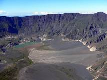

-
Tanjung Pasir

Dengan garis pantai yang panjang, Pulau Moyo memiliki banyak pantai yang keindahannya tidak kalah dengan yang ada di Lombok dan Bali. Hampir semuanya memiliki keindahan alam bawah laut yang mempesona. Salah satunya adalah Pantai Tanjung Pasir,Pantai Tanjung Pasir ini memiliki hamparan pasir putih yang paling luas di antara pantai yang lain. Air lautnya yang biru dan jernih seolah memanggil-manggil minta didekati. Kamu bisa sekedar bermain air di pinggiran pantainya atau mencoba berenang di kedalaman untuk bercengkrama dengan hewan laut dan terumbu karang yang ada di sana.

destinasi wisata yang paling terken al di Sumbawa yaitu Air Terjun Mata Jitu. Air terjun yang eksotis ini pernah dikunjungi oleh anggota keluarga kerajaan Inggris lho, yaitu mendiang Putri Diana. Putri Diana pun dibuat terpesona dengan keindahan air terjun yang memiliki tujuh kolam ini.Selain memiliki tujuh kolam, Air Terjun Mata Jitu juga memiliki empat undakan dan stalaktit-stalagmit dengan bentuk beragam yang menghiasi permukaan dinding air terjun, yang tentunya menambah keindahan air terjun yang mendapat julukan “Queen Waterfall” ini. Lokasi Air Terjun Mata Jitu ini cukup terpencil lho guys, yaitu tersembunyi di balik Hutan Pulau Moyo, yang lokasinya berada di Kabupaten Sumbawa, Nusa Tenggara Barat.
Sumbawa Besar punya negeri di atas awan, tepatnya di Desa Mantar, Kecamatan Poto Tano. Desa yang berada di ketinggian 600 mdpl ini menyajikan matahari terbit yang akan membuat hatimu bergetar,Bukit Mantar juga dikenal sebagai titik keberangkatan untuk paralayang. Saat kamu terbang dari Mantar, kamu akan melintasi perbukitan yang hijau dan pantai yang menakjubkan. Tak heran jika Mantar pernah menjadi tuan rumah kompetisi olahraga paralayang tingkat internasional.

Pulau Sumbawa dikelilingi oleh pulau-pulau kecil yang menarik hati, sebagai contoh Pulau Kenawa. Pulau tidak berpenghuni seluas 15 hektar ini kerap menjadi tempat berkemah atau sekadar berfoto karena memang pemandangannya indah banget. Rencanakan waktu kunjunganmu berdasarkan musim, karena warna rerumputan di Pulau Kenawa sangat bergantung pada musim. Ingat untuk membawa air bersih karena tidak ada mata air di pulau ini,Untuk menjangkau Pulau Kenawa, kamu bisa menyeberang dari Pelabuhan Poto Tano menggunakan perahu kayu milik masyarakat setempat. Seusai berkeliling pulau, kamu bisa snorkeling atau berenang di pantai. Berhubung pulau ini tergolong sepi, kamu akan dimanjakan dengan air yang masih sangat bening.

Tempat wisata di sumbawa yang berikutnya adalah gunung tambora,menjadi icon utama pilau sumbawa,gunung di berdiri kokoh menjulang langit dengan ketinggian mencapai 2.851 MPDL,dari puncak gunung sumbawa kita bisa melihat keindahnya alam pulau sumbawa,Terutama kawasan Bima,karena memang secara administratif gunung ini berada di kota Bima.pemandangan lain yang tidak kalah elsotis yang dapat kita lihat,mulai dari pepohona hijau yang memberi keteduhan bagi keteduhan yang melihatnya,tebing-tebing karang yang membuat pemandangan terlihat semakin eksotis.laut biru yang terhampar luas serta danau-danau cantik yang berada di lereng gunung tidak lepas dari pandangan,spot alam yang ada memang begitu mewah dan membuat kita betah berlama-lama di tempat ini.maka jangan sampai lupa membawa kamera saat melakukan perjalanan menyusuri tracking sepanjang gunung tambora
Kedua pantai ini dikenal dengan wisata andalan untuk aktivitas selancar atau selancar air dikepulauan sumbawa. Tepatnya berarada di perbatasan antara kabupaten sumbawa dan kabupaten dompu.objek wisata dua nama ini sebenarnya terdiri dari dua pantai yang berbeda,hanya saja letaknya berdekatan sehingga disebut silli maci.tempat ini menjadi salah satu spot menantang bagi penyuka surfing karena memiliki ombak super barel.jika kamu tidak suka,kamu bisa menonton aksi para peselancar yang bisa di saksikan sekitar bulan mei-agustus.saat puncak ombak sedang bagus.
salah satu alternatif wisata alam selain pantai yang bisa dinikmati di pulau sumbawa adalah air terjun kalela.letaknya di dalam hutan hijau yang dipenuhi pepohinan besar membuat suasana di sekitar air terjun terasa sejuk,segar dan menenangkan,keunikan yang dimiliki air terjun ini adalah berada di tebing batu berundak dengan kehijauan di kolamnya tersebutkarena efek akar-akar pohon dibawahnya.kamu bisa berenang dengan bebas di air terjun kalela atau mandi di bawah guyuran air terjun